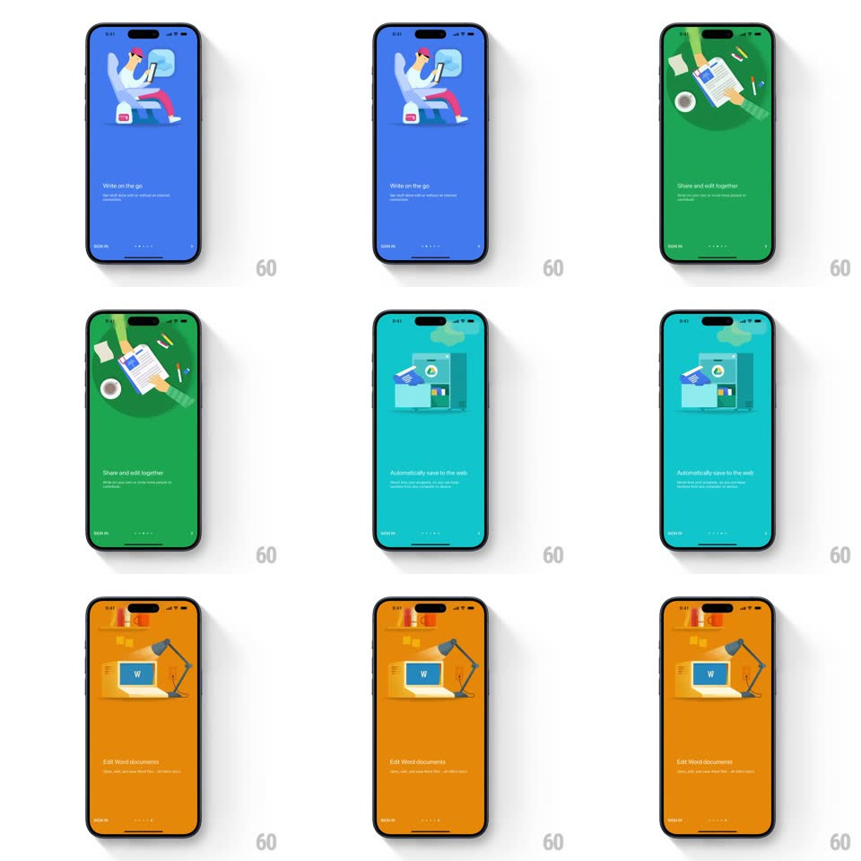

Media
Frame-by-frame

Rebuild this interaction 1:1: Google Docs' onboarding carousel - swiping between value-prop pages ("Write on the go", "Share and edit together", "Automatically save to the web", "Edit Word documents") floods the entire screen background from one saturated color to the next (blue -> green -> teal -> orange) while the illustration and copy slide horizontally with the swipe.

Rebuild this interaction 1:1: Google Docs' onboarding carousel - swiping between value-prop pages ("Write on the go", "Share and edit together", "Automatically save to the web", "Edit Word documents") floods the entire screen background from one saturated color to the next (blue -> green -> teal -> orange) while the illustration and copy slide horizontally with the swipe.
## Integration
Integration: stack-agnostic spec - springs given as stiffness/damping, timed motions as duration + curve; map every value to your framework and animation library of choice.
## Scene
Full-bleed onboarding pages: each is a solid saturated background with a centered illustration (person editing, shared doc scene, cloud save, Word doc) and headline + subline at the bottom, page dots and SIGN IN below; the first page is the white Google Docs logo splash.
## Motion spec
Pattern: paged carousel with full-screen color wipe.
- Swipe: illustration and copy track the finger 1:1 horizontally; the incoming page's background color bleeds in behind the content from the swipe edge, interpolating the whole background color continuously between the two pages' hues (direct swipe-progress mapping).
- Release past halfway: content springs to the next page (spring ~360/26, 320ms) and the background completes its color transition on the same spring; release short, everything springs back.
- Page dots update on settle (active dot stretches, 150ms).
- The illustrations have a light idle float after settling (translateY +/-4px, 2s loop).
## Calibration
- The background color is a continuous interpolation - mid-swipe the screen is a blend of both pages' colors.
- The white splash page transitions into blue on the first swipe the same way - no special-casing.
## Reduced motion
Pages crossfade (250ms); background color fades between states.
## Don't miss
- The color flood covers the entire screen including behind the status bar - no white edges.
- Each page's illustration and copy move together as one layer over the changing background.